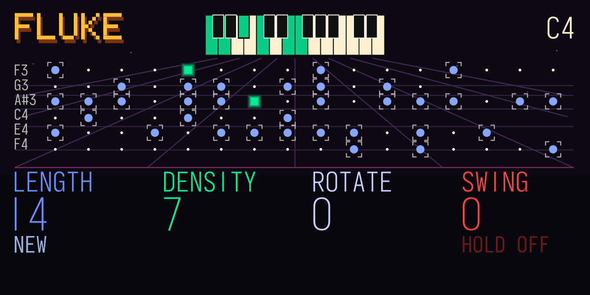

OPUS PLUGINS FOR THE ORIGINAL OP-1
FLUKE
Generative Sequencer and Drums for OP-1
Play evolving melodies and six-lane drum patterns with FLUKE. Build a kit with HITS, set each pad in motion with FLUX, and shape the dynamics with GRIP.
Original OP-1, firmware 246. The full set requires Opus core 2.57 or newer.
GENERATIVE SEQUENCER
FLUKE 2.0.4
Load FLUKE in Synth for a fresh melody, or in Drum to build rhythms across up to six note lanes. Play from the OP-1 keyboard and reshape the pattern as it runs.
- Choose a scale and play root notes from the keyboard. Use Styles and Density to reshape the rhythm, or switch to Pulses for evenly spaced Euclidean patterns.
- In Drums, use ALL to shape the kit together or Edit to give each lane its own length, rate and rhythmic feel. Rotate shifts the pattern, and Cut jumps back to the start in sync.
- Capture a melody or the complete drum pattern with Lift, try a variation, and use Drop to return to it.

DRUM SYNTHESIZER
HITS 1.0.4
Build a kit from synthesized kicks, metallic percussion, plucks and noise. All 24 pads generate their sounds as you play.
- Choose from 17 models adapted from Braids designs.
- Shape each pad with pitch, timbre, length and model-specific controls.
- Use choke groups to make pads cut each other off, and add grit with Decimate. When FLUKE is active, HITS shows its assigned drum keys and the lane you’re editing.
PER-PAD MODULATION
FLUX 1.0.5
Give each HITS pad two independent LFOs on the drum LFO page. Both keep running between hits, so the next hit picks up the current phase.
- Set waveform, rate, depth and destination independently for LFO A and B.
- Choose from sine, triangle, rising ramp, falling ramp and square.
- Modulate length, level, pitch, timbre, color, low cut or high cut.
Requires the updated HITS build.
COMPRESSOR
GRIP 1.0.3
Shape the dynamics of synths, drums or the master mix. Blend the compressed signal back in with Mix, or use the HITS kick to duck an instrument.
- RMS detection and program-dependent compression.
- Set threshold, ratio, attack and release, then fine-tune the response with Knee and Range. Use Makeup and Mix to blend in the compressed signal.
- Optional HITS kick sidechain on synth and drum FX.
GRIP runs on its own. With HITS selected, White push toggles Kick SC on synth and drum FX. Orange push toggles Hold when HITS is installed and FLUKE is active as the drum sequencer.
Install
Back up and delete earlier versions from the OP-1’s mods folder, then eject and restart. Extract the ZIP, copy the .opmod files to mods, eject, and restart again. Update HITS and FLUX together.
Credits
FLUKE was created by Volker Junginger / ESC_CODE, who also adapted FLUKE and HITS for Opus and designed their interfaces. FLUX is credited to ESC_CODE in its plugin manifest, and GRIP to ESC_CODE. Thanks to LizardMan for Opus and the Plugin Kit, and to Teenage Engineering for the original OP-1 hardware and interface references.
FLUKE adapts note generation and quantization from Mutable Instruments’ Marbles. Its groove design draws on Grids’ density and map interpolation. HITS adapts drum synthesis designs from Braids. Thanks to Emilie Gillet and Mutable Instruments. The Marbles and Braids adaptations carry MIT notices in the project source.
FLUKE’s design references include Iftah’s Sting, Torso T-1 and classic Korg sequencers. Its rhythm design draws on Richard Vogl’s drum-pattern research, Christian Cvachovec’s work on microtiming, René-Pierre Bardet’s 260 Drum Machine Patterns and Malcolm Braff’s work on groove and interacting rhythmic layers.
SoundHack and Tom Erbe’s +decimate inspired HITS’ bit reduction. Capcom’s Street Fighter II inspired the original fighter illustrations. GRIP’s RMS detection and program-dependent gain response draw on the dbx 160A.
The screen images are desktop previews. The original FLUKE preview assets use Iosevka by Belleve Invis and contributors under the SIL Open Font License.